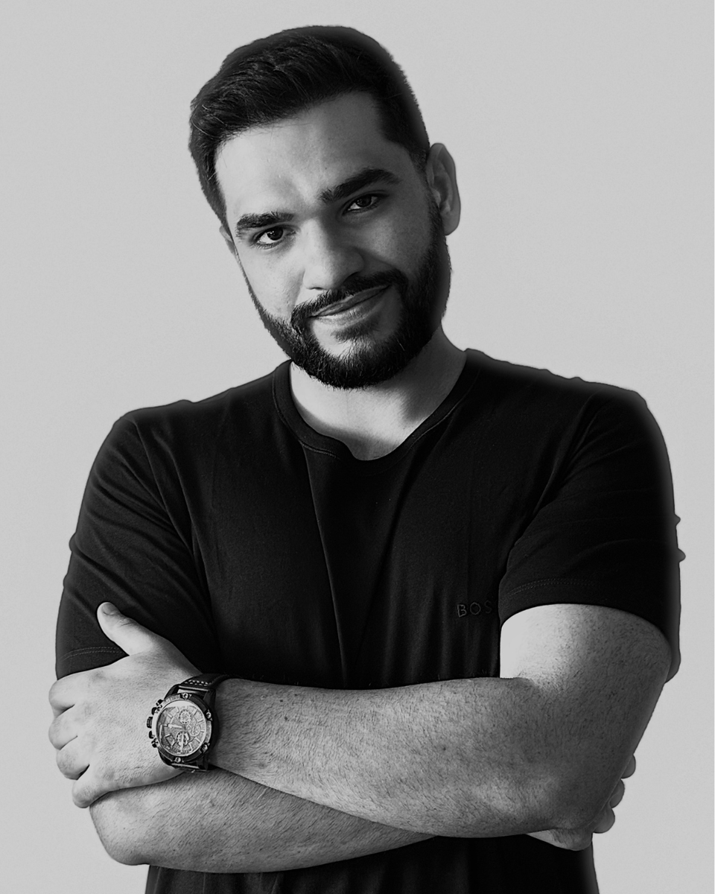

Em 30 dias, dentro do código de ética, sem virar refém de indicação nem precisar gravar vídeo. As 3 etapas do Protocolo 3C instaladas e rodando no seu escritório.
Seu caixa oscila demais. Mês de R$ 40 mil seguido de mês de R$ 8 mil.
Chega contato, mas você não fecha. Ou fecha por valor menor do que merece.
Você trabalha 12 horas por dia e ainda sente que não avança.
Sua principal estratégia ainda é torcer pra alguém te indicar.
"O Google Ads foi só uma das três etapas. Sem fluxo de atendimento e sem script, eu ia faturar mais e atender pior."
"Eu não tinha noção de quanto perdia no atendimento. O processo mudou tudo."
"Sai da operação. Hoje pilotando o escritório, não correndo atrás dele."
Cada caminho abaixo resolve UMA peça. Nenhum deles resolve o sistema. E sem sistema, peça nova vira só mais um custo.
Carrossel de "você sabia que" sobre Direito, no automático. Gera curtida, não gera contrato. Sem caminho de entrada, sem conversa, sem caixa.
Gestor de tráfego sobe campanha sozinho e gera demanda. Sem fluxo de atendimento e sem qualificação, você atende mais, perde mais, e fica sobrecarregado sem ver resultado no caixa.
É o passo a passo completo, instalado no seu escritório, pra você levar a sua banca pro próximo nível sem ter que aprender ferramenta nova nem virar marqueteiro.
Enquanto te vendem postagem solta, tráfego avulso e curso isolado, ninguém te entrega o sistema completo. O mercado de marketing jurídico lucra com você comprando peça atrás de peça. Porque peça avulsa nunca resolve, e te obriga a comprar a próxima. E a próxima. E a próxima.
de ter um escritório com caixa previsível sem depender de indicação nem virar influencer. É exatamente isso que o Protocolo 3C entrega.
Três etapas plugadas, rodando todos os dias no seu escritório. Você não compra anúncio avulso. Você instala um sistema completo de Captação, Conversão e Crescimento.
Resolve: depender de indicação
Seu escritório está na frente de quem já está procurando advogado, no momento exato da decisão. Quem busca te encontra primeiro.
Resolve: perder o contato no atendimento
Só pessoa séria chega no seu WhatsApp, e quando chega, já vem pronta pra virar contrato. Você atende menos e fecha mais.
Resolve: faturar mais sem se sobrecarregar mais
Cada contrato fechado vira combustível pro próximo. Sistema rodando todo dia, evoluindo todo mês, virando ativo do escritório.
Cada mês que passa, mais escritórios da sua cidade estão instalando sistema. Quem busca advogado na sua área hoje encontra eles, não você.
O Google não mostra dois primeiros lugares. Existe UM primeiro. E enquanto você adia a decisão, alguém na sua região ocupa essa vaga.
Recuperar terreno depois custa muito mais caro do que chegar primeiro. Não porque o investimento sobe, mas porque o mercado fica mais maduro, mais competitivo, e mais difícil de furar.
A janela está aberta. Não vai ficar.
Peças instaladas e rodando no seu escritório em até 30 dias. Sem você ter que aprender ferramenta nova, sem gravar vídeo, sem virar marqueteiro.
Diagnóstico inicial em 90 minutos. Identifica por qual etapa o sistema vai começar a rodar primeiro.
Página única, pronta, validada. Quem clica em anúncio cai aqui e entende em 5 segundos por que falar com você.
Configurados, otimizados e geridos. Quem busca advogado na sua área te encontra primeiro.
Filtro de entrada que separa curioso de quem realmente quer contratar. Você só atende contato sério.
Roteiro estruturado pra você ou pra secretária. Da primeira mensagem ao "vamos assinar".
Reunião de 30 minutos a cada 15 dias pra ler resultado, ajustar o sistema e responder dúvidas.

Sou formado em Direito. Saí da advocacia, fui pro outro lado do balcão e passei anos vendo de dentro como o mercado de marketing jurídico fatura vendendo peça solta pra advogado. Anúncio aqui, curso ali, social media acolá, sem nunca entregar um sistema completo.
Construí o Protocolo 3C justamente com o que aprendi vendo a máquina por dentro. Hoje opero campanhas para dezenas de escritórios, centenas de milhares investidos por mês em mídia, com um único compromisso.
O que o mercado vende em peça, eu entrego em sistema.
Você responde um formulário curto (5 min) que valida se o seu escritório se encaixa no Protocolo.
Se houver fit, marcamos uma call gratuita de 45 minutos pra ler o cenário do seu escritório.
Você sai da call sabendo por qual etapa o sistema deve começar. Com ou sem trabalhar comigo.
Se fizer sentido, te mostro como instalar o Protocolo no seu escritório. Se não, você sai com diagnóstico gratuito.
O diagnóstico é gratuito e sem compromisso. Se o seu escritório não se encaixar, eu mesmo te falo. Você sai com um raio-x do seu negócio sem pagar nada.
Mas se você não fizer nada, daqui a 6 meses seu caixa ainda vai oscilar, você ainda vai trabalhar 12 horas e ainda vai torcer pra alguém te indicar. A escolha é sua.